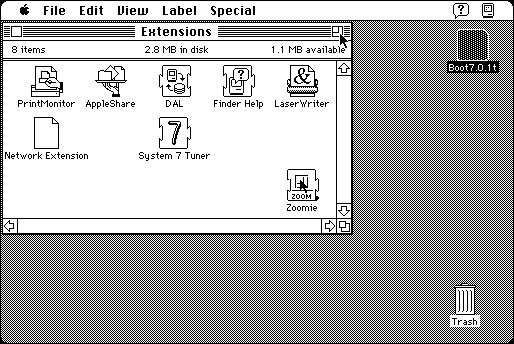

Download
zoomie.zip (8K) Zoomie 1.0.3 repackaged into a zipped hfs disk image and checksum file. The disk image can be mounted with Mini vMac.
zoomie.sit.hqx (8K) Zoomie 1.0.3 in the original format.
copyright: Paul Sexton
mod date: Apr 25, 2000
license: Freeware
from url :
Shareware
An extension to “improve the operation of Zoom boxes.” When a window zooms, the mouse pointer is moved to stay on the zoom box, so that you can easily click on it again. Mini vMac must be in Full Screen mode for this to work (to activate the lower level mouse emulation). For “System 7 or greater.”

If you find these downloads useful, please consider helping the Gryphel Project, which hosts them.
Here are the md5 checksums for the downloads, signed with Gryphel Key 5:
--------- GRY SIGNED TEXT --------- e22880f34065310275583970afa8e2f7 zoomie.zip 60e41a4473fe7b5bafab7dd679c3ecd0 zoomie.sit.hqx ------- BEGIN GRY SIGNATURE ------- Gry/4Xa8CFcUzxdN/AyJQW+M0x/udvLAaEuLiBzicLk4JXBDzYDHZmzzMXx2w4P6 rNQPQELB8s7o21Fa4NeenoaGsZVzcdpPQG+mQQWqV9nA1cUI77+TQcJbgKuFFIGD DGH1HoBO3OU8rw1g6Cg/4q6a8gz79AIJwooTlc/PIsB9m9UGbi2BiAFmdRC1D2vm -------- END GRY SIGNATURE --------